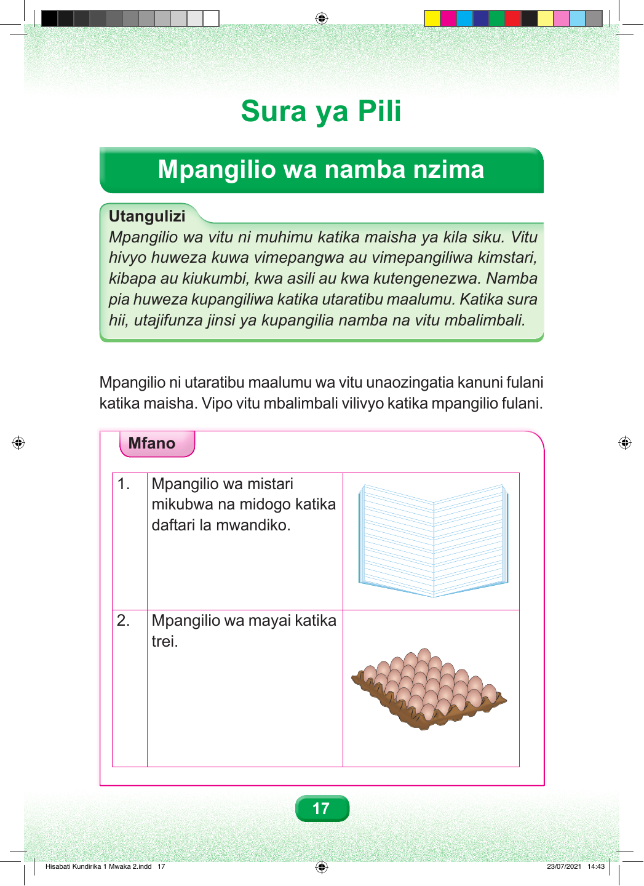

Sura ya Pili Mpangilio wa namba nzima Utangulizi Mpangilio wa vitu ni muhimu katika maisha ya kila siku. Vitu hivyo huweza kuwa vimepangwa au vimepangiliwa kimstari, kibapa au kiukumbi, kwa asili au kwa kutengenezwa. Namba pia huweza kupangiliwa katika utaratibu maalumu. Katika sura hii, utajifunza jinsi ya kupangilia namba na vitu mbalimbali. Mpangilio ni utaratibu maalumu wa vitu unaozingatia kanuni fulani katika maisha. Vipo vitu mbalimbali vilivyo katika mpangilio fulani. Mfano 1. Mpangilio wa mistari mikubwa na midogo katika daftari la mwandiko. 2. Mpangilio wa mayai katika trei. 17 Hisabati Kundirika 1 Mwaka 2.indd 17 23/07/2021 14:43